Designing clarity into a wellness platform built for long-term behavior change

The Challenge
“How do we make a dense, data-heavy app feel clear enough that someone opens it on day 14 — not just day 1?”
Pro2col is Herbalife's personalized wellness platform — part health assessment, part daily tracker, part coaching plan. The challenge wasn't building more features; it was making an app with this much depth still feel light enough to return to, day after day, without collapsing into clutter.
Two users pulling in opposite directions.
We developed behavioral personas to ground the design in real tension, not assumptions. Two of them shaped the surfaces I worked on most — and the conflict between them became the central design problem.
The Skeptic
Wants → ClarityNew to wellness apps, time-poor, allergic to clutter. Skims onboarding, abandons anything that feels long or rigid, responds to small early wins. If the first screen feels heavy, this user is gone.
The Optimizer
Wants → DepthExperienced and data-fluent. Wants detailed insights, weekly analytics, data that evolves with them. Easily frustrated by an app that feels shallow or treats them like a beginner.
Onboarding as a foundation, not a form.
The original assessment leaned on complex sliders across 32 questions — technically thorough, practically exhausting. I simplified inputs into multiple-choice questions with consistent anchors, so answering felt fast and the resulting plan still felt personal.
Current state — 32 questions, slider-based inputs
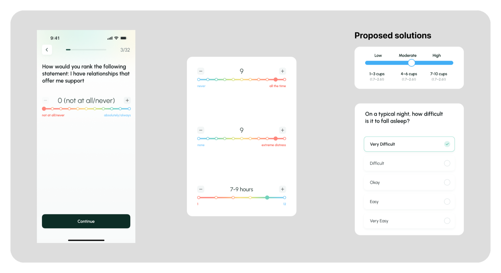
The rainbow slider competes with the stepper (+/−) for the same action — redundant signals for a choice that's already discrete. The color spectrum adds cognitive load, not clarity, and points sit too close to the buttons, making mis-taps easy.
Many questions reuse the same slider pattern while changing what the scale means — intensity vs. frequency vs. duration. Users re-interpret the scale on every screen, adding load during sensitive, self-reported questions (sleep, anxiety).
Standardize subjective measures with multiple-choice inputs and consistent anchors (None / Sometimes / Often, or Low / Moderate / High). Less cognitive load, no redundant sliders, clearer and more reliable responses — data integrity intact, and the assessment feels supportive, not taxing.
Solution — simplified, multiple-choice, consistent anchors
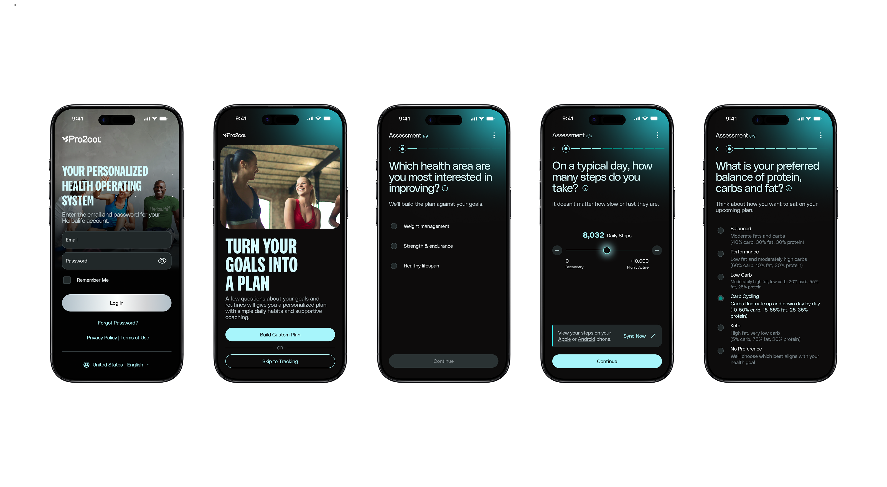
One screen, four questions answered.
The daily dashboard had to answer where am I right now, what needs attention, how am I progressing, and what should I prioritize today — without turning into a wall of cards. Each module (nutrition, hydration, eating window, steps, exercise, lifestyle hacks) is scannable at a glance and expandable on demand.
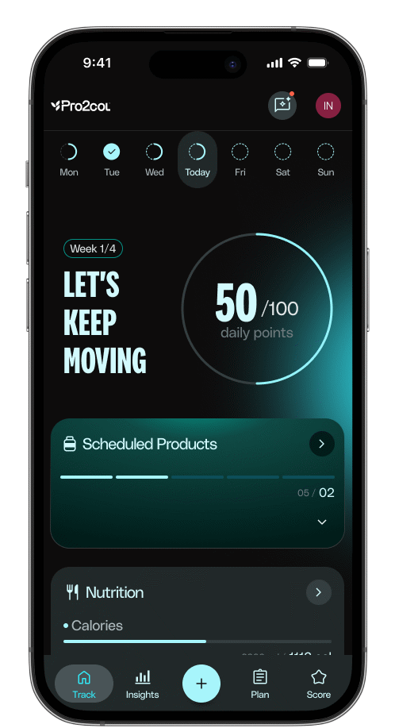
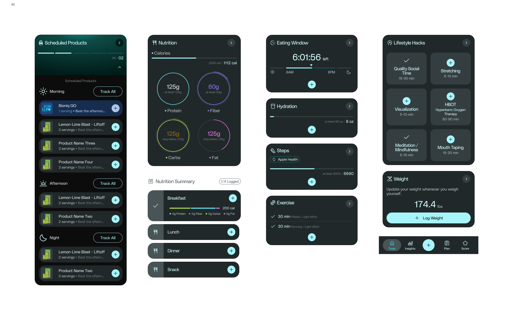
Progress, not just numbers.
Raw metrics don't motivate — context does. Weekly and monthly views surface trend direction and contextual summaries instead of dumping charts on the user, so progress is something you can feel, not just read.
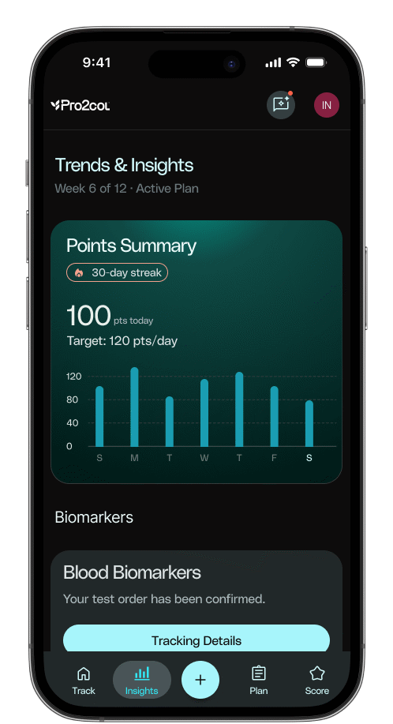
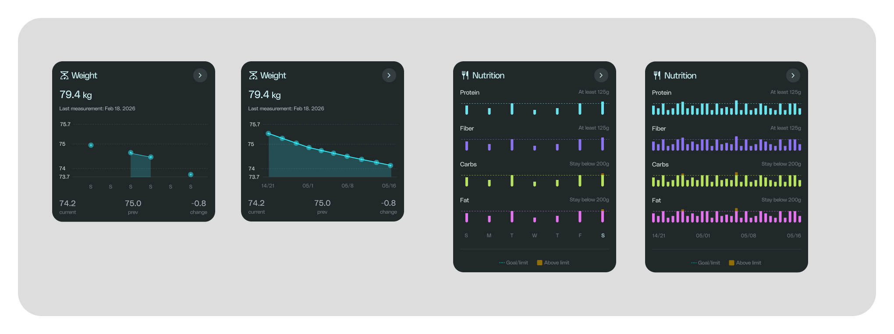
Data turned into a narrative.
Pro2Score and Pro2Age translate a wall of assessment answers into two numbers someone can actually hold onto — paired with a plan that adapts as goals are completed, instead of a static PDF handed off once.
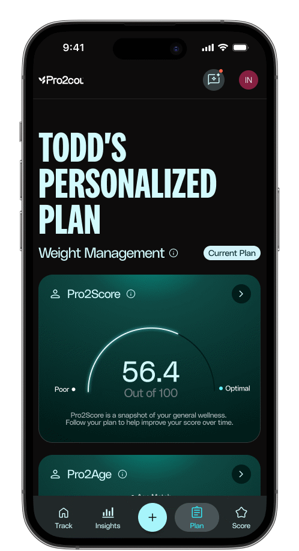
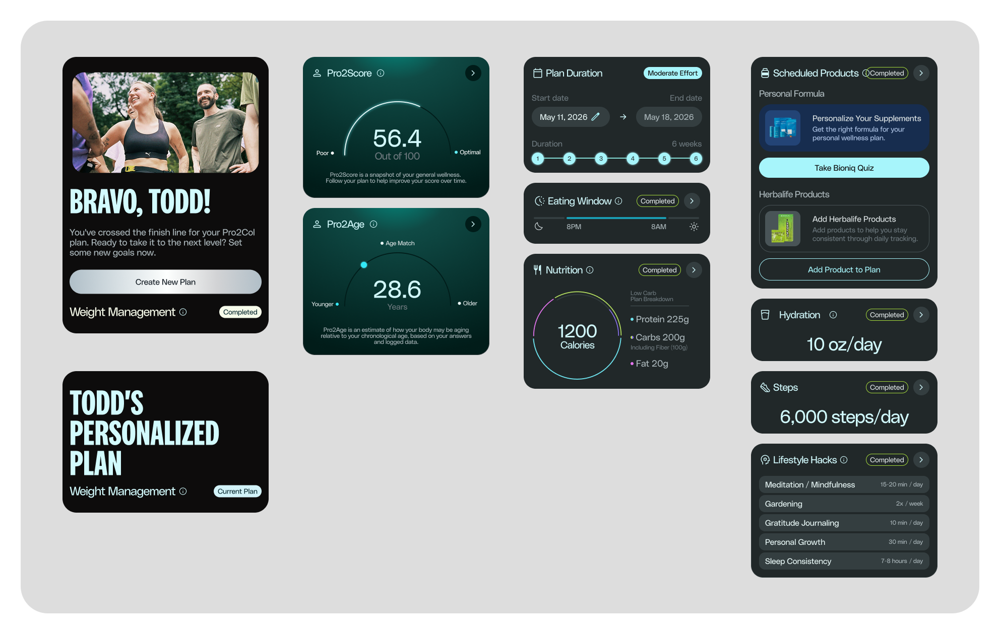
Modular surfaces that stay connected.
Nutrition, hydration, movement and more each get their own detailed view — logging a meal or a workout never feels disconnected from the daily summary it feeds into.
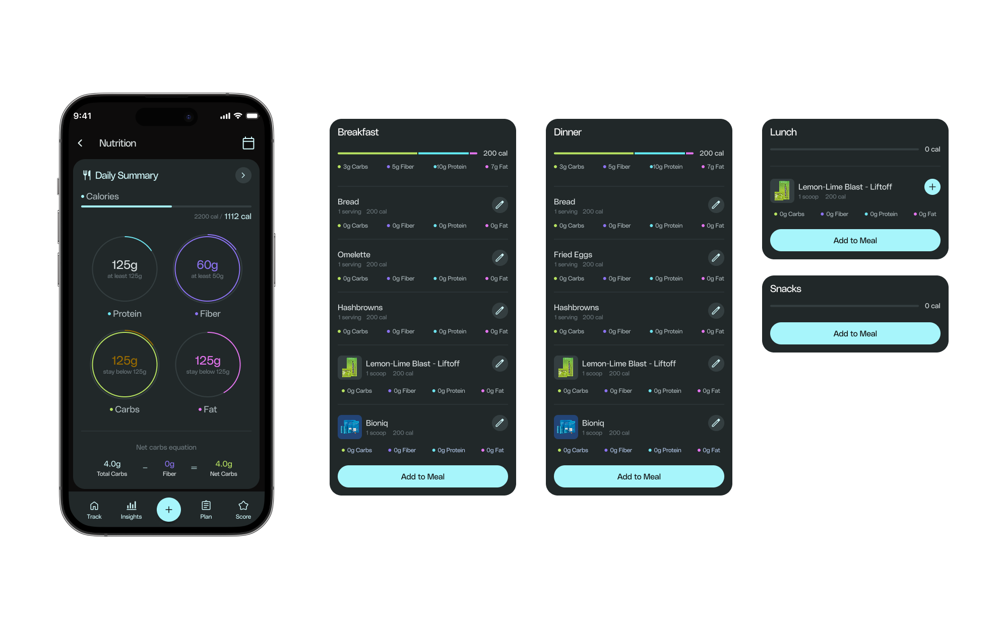
Logging shouldn't be the hard part.
A single centralized "+" action handles the most frequent tasks — search, snap a photo, or scan — so logging a meal or a habit takes seconds, not a trip through several menus.
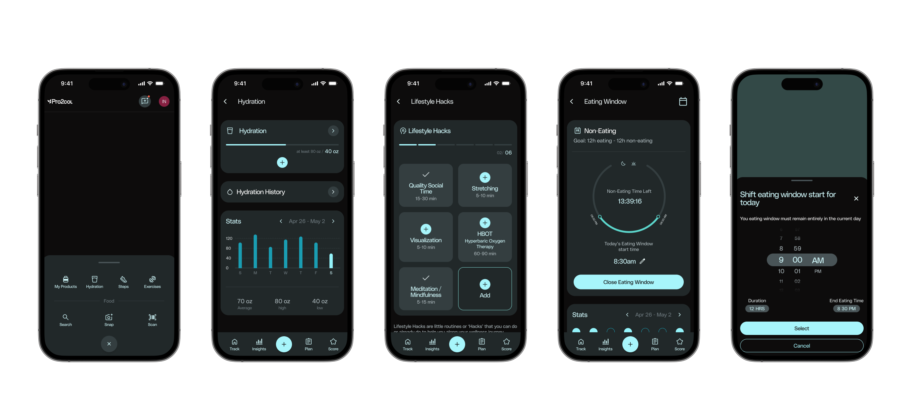
Clinical data, made legible.
Lab results are usually a spreadsheet of unfamiliar terms. Here, each biomarker gets a plain-language explanation, a visual in-range indicator, and a trend line — turning clinical data into something a non-clinician can actually act on.
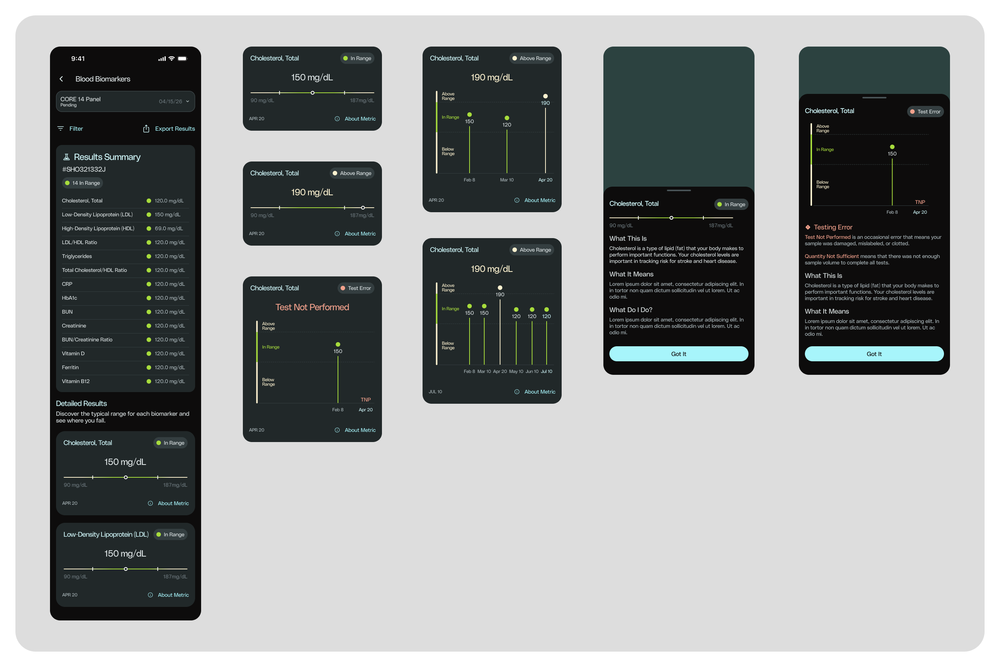
Restraint was the real design decision — deciding what not to show mattered more than what we added.


Let's build
something great.
danierocruz@gmail.com
Usually respond within 24h · Open to remote, B2B & SaaS projects.